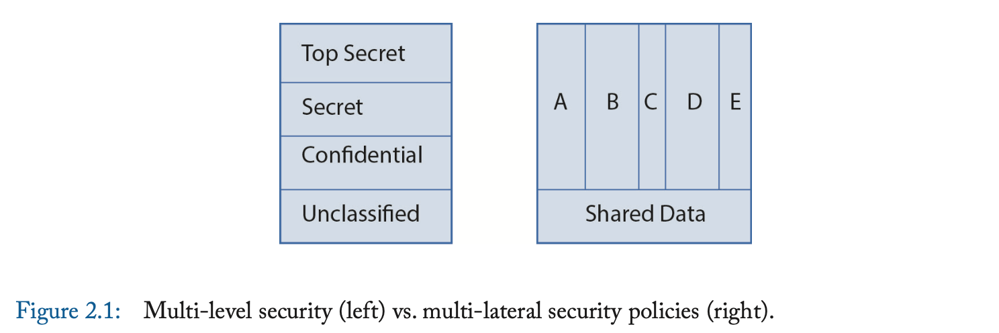
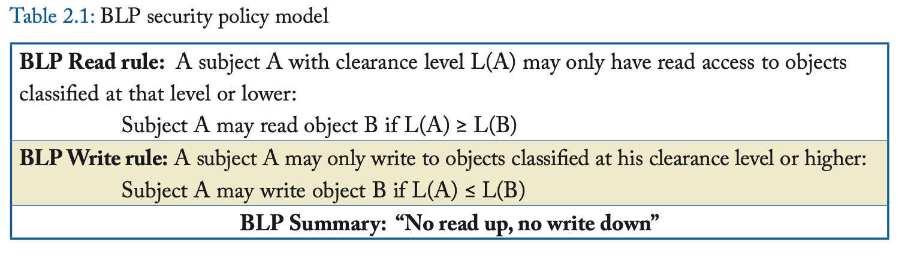
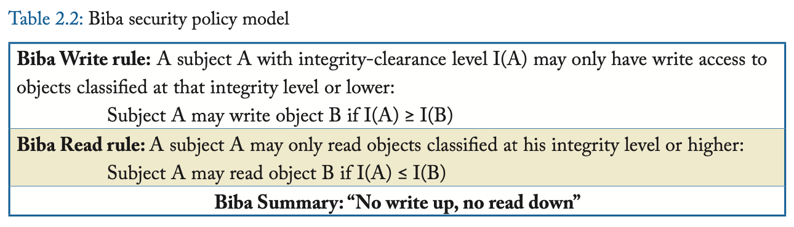
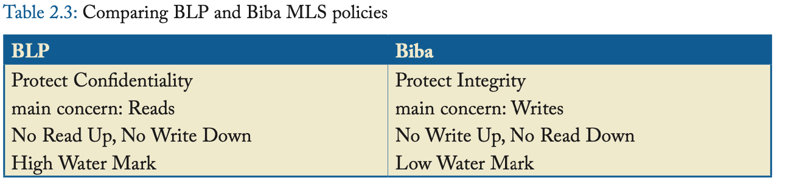

Security Policy Models 安全策略模型
现实生活中的安全策略可能会非常复杂。 它们通常由代表各利益相关者利益的委员会和/或公司高管制定。 安全策略不是由工程师决定的技术问题。 相反，工程师设计了执行安全策略的安全机制。
安全策略模型让我们能够理解安全策略。 它们提供了一种抽象，使得我们可以关注到保护模型中的核心思想，同时避免陷入特定安全策略中遇到的复杂问题。
在本章中，我们讨论多级安全（MLS）策略模型(muti-level security policy model)（2.1节），以及多边安全策略模型(multi-lateral security policy model)（2.2节）。 图2.1展示了这两种模型。 引用文献[6,7,8,9]中可以找到对于安全策略的好的讨论。

MULTI-LEVEL SECURITY POLICIES 多级安全策略
多级安全（MLS）策略假定了一种层次化的访问模型，其中主体和客体被划分为不同的安全或完整性级别。 存在严格的规则描述允许的信息流方向，基于这些先验的分类。
图2.1左半部分展示了防御系统对客体化分了几种不同的安全等级： 顶级秘密（TS），秘密（S），机密（C），公开（U）。 (Top Secret, Secret, Confidential and Unclassified.) 相似的，主体的访问许可也被划分为四个等级：TS，S，C，U。 公开等级是不受限制的，且更高的访问许可需要更广泛的背景检查。 这四种安全等级有如下的偏序关系： $$ \text{TS}\ge\text{S}\ge\text{C}\ge\text{U} $$
某个拥有TS等级访问许可的人可以访问所有等级的客体，而拥有S等级访问许可的人只能访问S等级及以下的客体。 虽然最初是为了军事目的设计的，MLS策略现在也被用于商业系统中，例如领导层（TS）相较于经理（S）可以访问公司所有的更多信息，而经理（S）可以比员工（C）访问更多信息，员工（C）可以比公众（U）访问更多信息。
机密性和完整性有单独的规则。 我们在下面讨论这些规则，即用于保护机密性的 Bell La Padula (BLP) 安全策略模型和用于保护完整性的 Biba 模型。
BELL LA PADULA (BLP) FOR CONFIDENTIALITY 针对保密性的 Bell La Padula (BLP) 模型
BLP是一种MLS策略模型，用于保护机密性。 机密性首先且主要关注通过读的方式访问客体。 其后，写操作也需要被管控，由于高读权限主体的写操作可能向不具有高读权限的主体泄露信息。 BLP（根据作者名字命名）有两条规则，如表格2.1所示。 \(L(x)\)表示客体\(x\)的安全等级或主体\(x\)的访问许可等级。
针对读的规则，也被称为“简单安全属性”(Simple Security property)，很好理解。 它要求主体只能读取比自己访问许可等级低的客体。

针对写的规则，也称为 *-属性（发音为“星”属性），更难理解。 (The write rule, also called the *-property (pronounced "star" property), is harder to understand.) 我将通过一个例子来解释这一点。 假设一位拥有最高机密（TS）权限的腐败将军，他正在与一名被怀疑是俄罗斯间谍的人进行通信，而该间谍的权限为非机密（U）。 由于将军可以阅读最高机密文件，如果允许他写入非机密文件，间谍就可以阅读非机密文件，其中可能包含将军已阅读的一些最高机密信息。 *-属性可防止此类信息泄露。 （这也是一个信任的主体不可信的例子。）
当两个或多个不同安全等级的客体组合在一起时，BLP具有“高水位标记”(high-water mark)效果： 组合后的客体的安全等级取所有组合前客体的安全等级的最高值。
举个最近的例子，考虑维基解密案。 如果实施了严格的BLP安全策略，那么士兵将无法访问TS文件（除非他有TS访问许可）。 但是如果他有TS许可，*-规则将阻止他将信息写入非机密文档、存储或网络，这样他就无法将TS信息泄露给维基解密。 当然，真实的故事要复杂得多。
BIBA FOR INTEGRITY 针对完整性的 Biba 模型
Biba是一种MLS策略模型，用于保护完整性。 主体的完整性访问权限以及客体的完整性安全等级与其机密性访问权限和安全等级未必一致。 例如，一个被标记为机密性TS的高机密性文件可能来自一个没有被自习检查的来源，因此其完整性安全等级可能只是C或者U。
表格2.2总结了Biba安全策略模型。 “写不向上”(no write up)规则要求主体不能写入比自己完整性等级高的客体。 “读不向下”(no read down)规则是为了防止高完整性的主体的决策信息受到低完整性的信息的污染。
当两个或多个不同完整性等级的客体组合在一起时，Biba具有“低水位标记”(low-water mark)效果： 组合后的客体的完整性等级取所有组合前客体的完整性等级的最低值。
通常，只需两个完整性等级就足够了：高或者低(Hi and Lo)。 机密性等级也是如此。 一般来说，MLS 系统可以定义任意数量的机密性或完整性级别，最低数量为两个：可信或不可信(trusted or not trusted)。

Comparing BLP and Biba 比较 BLP 和 Biba
BLP 保护机密性，而 Biba 保护完整性。 BLP 更关注读取，而 Biba 更关注写入。 BLP 和 Biba 是对偶的，如表 2.3 所示。

EXAMPLE 例子
例如，BLP 可用于防止恶意软件读取密码文件。 将密码文件归类为 Hi 安全性，将来自网络（或写入网络）的任何内容归类为 Lo 安全性。 即使恶意软件（Lo 安全性）进入系统，如果执行 BLP，它也无法读取密码文件。 如果恶意软件以某种方式设法获得 Hi 系统程序的许可，它将能够读取密码文件。 但是，它无法将密码文件写入网络，因为这相当于写入 Lo 文档。
类似地，Biba 可用于防止未经授权修改系统文件。 假设系统文件被归类为 Hi 完整性，网络输入和输出被归类为 Lo 完整性。 由于“禁止写入”规则，来自网络（Lo 完整性）的恶意软件将无法写入（修改）系统文件。 如果恶意软件与系统文件结合，它会将系统文件拉低到 Lo 完整性——因此，系统文件将被“污染”，并且将不再能够像在被污染之前那样访问系统数据。
许多关于动态信息流跟踪(Dynamically Information Flow Tracking, DIFT)的论文都提到了将网络中的数据或代码污染为不可信，并传播这种污染——这只是 Biba 安全策略模型的一种实现。 我们在附录：进一步阅读(Appendix: Further Readings)中给出了以硬件为中心的 DIFT 论文列表，以及一些经典的静态信息流跟踪论文，供感兴趣的读者参考。
MLS SECURITY LEVELS AND PRIVILEGE LEVELS MLS 安全等级和特权等级
MLS安全等级(MLS security levels)和特权等级(Privilege Levels, PL)是不同的计算机架构术语。 尽管两者都定义了结构化的访问权限，特权等级并不区分读和写。 同样，一个高的特权等级（例如\(\text{PL}=0\)的操作系统）可以读写所有较低特权级别（例如，\(\text{PL}=3\)的用户空间或\(\text{PL}=1/2\)的中间件）的所有对象。 MLS 安全级别与特权级别正交。 操作系统是否应该有权读取绝密文件？ 理想情况下不应该，特别是如果它不在可信计算基(TCB)中。 如果操作系统在TCB中，则可以授予它访问所有文档的权限。 由于对于商品系统，访问控制通常由操作系统强制执行（如果有的话），我们可以说这些操作系统是信任的，但不一定可信。 因此，需要在操作系统下面有一个较低级别的信任的软件，这样操作系统就不需要被信任。 然而，这种较低级别的系统软件（例如虚拟机管理程序）也可能受到攻击，因此硬件架构可能需要提供帮助。 当然，硬件也可能受到攻击，但攻击硬件通常比攻击软件要困难几个数量级。
MULTI-LATERAL SECURITY POLICIES 多边安全策略
尽管许多军队和商业实体使用曾策划的组织，使得MLS策略可以实施，许多其他的实体需要一种多边的隔离方式，将数据隔离在不同的信任域(trust domains)中（图2.1）。 这种情况在多个商业公司间尤为常见。 哪怕是在使用层次化MLS策略的大多数系统中，对于一个安全等级进行多边划分也经常是需要的。 这是由于所谓的“需要知道(need to know)”的情况，正如我们在2.2.3节中叙述的带有密语的BLP(BLP with code words)一样。 下面我们讨论更适合多用途场景和群组结构的多边安全策略。 在讨论其他的多边策略之前，我们先从一个针对机密性的多边策略开始（the Chinese Wall policy，中国墙策略），然后讨论一个针对完整性的多边策略（the Clark-Wilson policy，克拉克-威尔逊策略）。